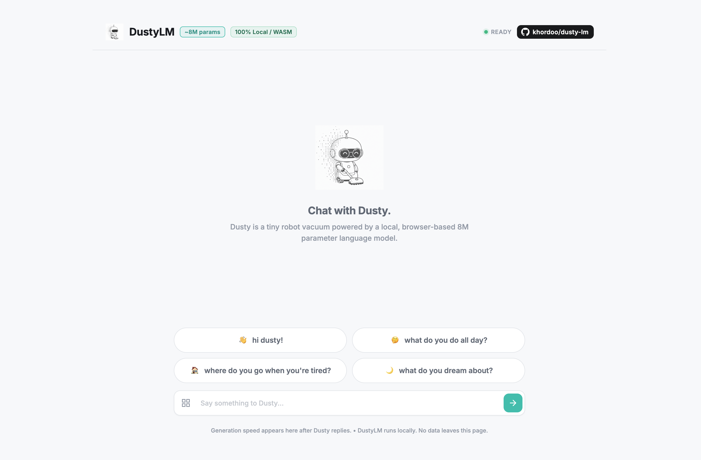

01 • DUSTYLM
8M PARAMS

SFT RELEASE
DustyLM
8M-Parameter Language Model From Scratch
An 8M-parameter language model you can train from scratch in 15 minutes. Custom PyTorch architecture, SFT dataset curation (dusty-chat), published PyPI SDK (dustylm-sdk), and in-browser WebAssembly demo.
PyTorch · Transformers · PyPI · Wasm · Hugging Face